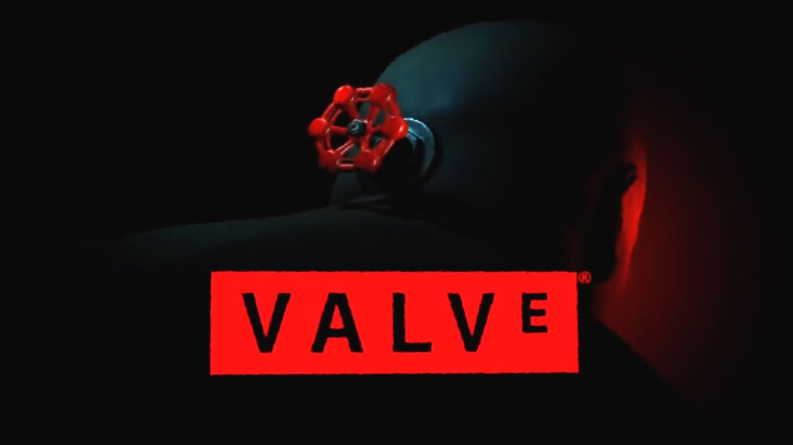

Gabe NewellGabe Newell
Gabe NewellGabe NewellGabe Logan Newell é o cofundador e diretor de projetos da empresa de desenvolvimento de jogos eletrônicos e distribuição digital Valve Corporation. É uma das figuras mais aclamadas do mundo dos games, e uma das personalidades mais fortes da indústria dos jogos eletrônicos.
Após largar a Universidade Harvard, Gabe permaneceu 13 anos trabalhando na Microsoft Corporation, no fim tornando-se um "Milionário da Microsoft".
Ele descreveu a si mesmo como "um produtor dos 3 primeiros lançamentos do Windows". Inspirado por Michael Abrash, que saiu da Microsoft para trabalhar no jogo de computador Quake, na id Software,
Newell e o seu colega de trabalho Mike Harrington deixaram a Microsoft para fundar a Valve em 1996. Ele e Mike usaram o dinheiro de seus próprios bolsos para fundar a Valve com o desenvolvimento de Half-Life
Em 2007, Newell expressou publicamente o seu descontentamento em relação a desenvolver o seu software para consoles, em particular, o PlayStation 3.
Gabe já foi citado por ter dito que ter que desenvolver processos para o console, em geral, era "perda de tempo para todos" e "um desastre de vários níveis".
Ele também afirmou que, mesmo tão tarde, a Sony deveria cancelar a venda do console e refazê-lo do zero. Apesar disto, na E3 de 2010, Newell participou da apresentação da Sony; ciente e sendo franco a respeito de seus comentários anteriores sobre o desenvolvimento para consoles, ele discutiu sobre a natureza aberta da plataforma PlayStation 3, e anunciou Portal 2 para o console,
Em dezembro de 2010, Forbes nomeou Newell como "Um Nome que Você Deve Conhecer", sobretudo devido ao seu trabalho em criar parcerias entre a Steam e múltiplas desenvolvedoras.
Em dezembro de 2021, a revista Forbes estimou que a fortuna de Newell era avaliada em US$ 3,9 bilhões de dólares,
sendo que ele é dono de um-quarto da Valve. De acordo com
Charlie Fish, autor do livro The History of Video Games, em 2021 Newell era a pessoa mais rica da indústria de videogames.
Entrevista de Gabe Newell a IGN sobre o aparelho Steam Deck